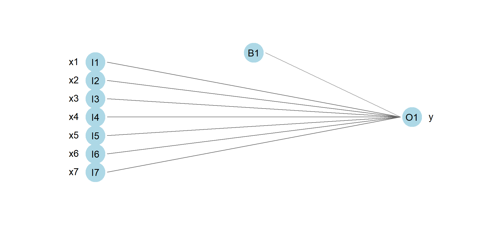
Classification
Introduction to Machine Learning
Alvaro Arias
Review of Regression
- In regression, we observe data \(\{(\mathbf{x}_i,y_i):i\leq N\}\) where \(\mathbf{x}_i\in\mathbb{R}^n\) and \(y_i\in\mathbb{R}\)
- We model the relationship using \(f_\theta:\mathbb{R}^n\to\mathbb{R}\) to predict: \(\hat{y}_i = f_\theta(\mathbf{x}_i)\)
- The residual (error) for each observation is \(y_i-\hat{y}_i\)
- We measure overall fit using a loss function, typically: \(\text{Loss}(\theta) =\frac{1}{N}\sum_{i=1}^N(y_i-\hat{y}_i)^2\)
- Goal: find \(\theta^*\) that balances minimizing training error with generalizing to unseen data (avoiding overfitting)
In simple linear regression the model is \[f_\theta(x)=\omega_0+\omega_1x\]
Parameters: \(\omega_0\) (bias) and \(\omega_1\) (weight)
Inpolynomial regression the model is
\[f_\theta(x)=\omega_0+\omega_1x+\omega_2x^2+\cdots+\omega_dx^d\]
Parameters: \(\omega_0\) (bias) and \((\omega_1,\omega_2,\dots,\omega_d)\) (weights)
In multilinear regression the model is
\[f_\theta((x_1,x_2,\dots,x_n))=\omega_0+\omega_1x_1+\omega_2x_2+\cdots+\omega_nx_n\]
Parameters: \(\omega_0\) (bias) and \((\omega_1,\omega_2,\dots,\omega_d)\) (weights)
The neural network diagram below visualizes this structure
Binary Classification
In binary classification, we observe data \(\{(\mathbf{x}_i,y_i):i\leq N\}\) where \(\mathbf{x}_i\in\mathbb{R}^n\) and \(y_i\in\{0,1\}\) is the label.
- Instead of predicting a continuous value, we model \(p = P(y=1|\mathbf{x})\), the probability that \(\mathbf{x}\) has label 1
- This implies \(1-p = P(y=0|\mathbf{x})\) is the probability that \(\mathbf{x}\) has label 0
- Therefore we model the complete probability mass function over the two classes
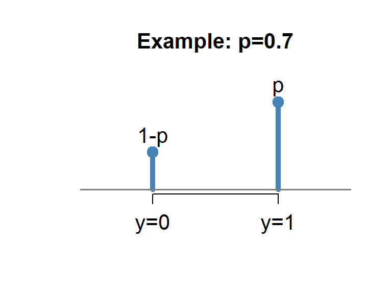
The likelihood is the probability of observing the actual outcome \(y\).
For this estimate, the likelihood is:
\[ \text{likelihood}=\begin{cases} p &\text{if} &y=1\\1-p &\text{if} & y=0\end{cases}\\ \]
which can be combined as: \(\quad\text{likelihood}=p^y(1-p)^{1-y}\).
- A good model assigns high likelihood to the observed data.
- This motivates choosing parameters that maximize the likelihood, a fundamental principle in statistics called Maximum Likelihood Estimation (MLE).
- MLE is a cornerstone of statistical inference, used across countless applications from biology to economics to machine learning.
Binary Classification: MLE
We model the probability using \(f_\theta:\mathbb{R}^n\to [0,1]\) where \(f_\theta(\mathbf{x})\) estimates the probabilty that the label of \(x\) is 1.
Maximum Likelihood Estimation (MLE): Choose \(\theta^*\) that maximizes the probability of observing our data
Likelihood for all observations: \[\mathcal{L}(\theta) = \prod_{i=1}^N f_\theta(\mathbf{x}_i)^{y_i}(1-f_\theta(\mathbf{x}_i))^{1-y_i}\]
Log-likelihood (easier to optimize): \[\log \mathcal{L}(\theta) = \sum_{i=1}^N \left[ y_i\log(f_\theta(\mathbf{x}_i))+(1-y_i)\log(1-f_\theta(\mathbf{x}_i))\right]\]
Binary Cross-Entropy Loss (negate and average): \[\text{Loss}(\theta) = -\frac{1}{N}\sum_{i=1}^N\left[ y_i\log(f_\theta(\mathbf{x}_i))+(1-y_i)\log(1-f_\theta(\mathbf{x}_i))\right]\]
Minimizing this loss ≡ Maximizing the likelihood
Logistic Regression
In Logistic Regression, we model the probability using: \[f_\theta(\mathbf{x})=\sigma(\omega_0+\omega_1x_1+\dots+\omega_nx_n)\]
where \(\sigma:\mathbb{R}\to[0,1]\) is the sigmoid function: \[\sigma(t)=\frac{1}{1+e^{-t}}=\frac{e^t}{1+e^t}\]
The sigmoid maps any real number to a probability in \([0,1]\).

Logistic Regression combines multilinear regression with the sigmoid activation function:
Step 1: Linear combination \[z = \omega_0+\omega_1x_1+\dots+\omega_nx_n\] The linear part produces \(z\in\mathbb{R}\)
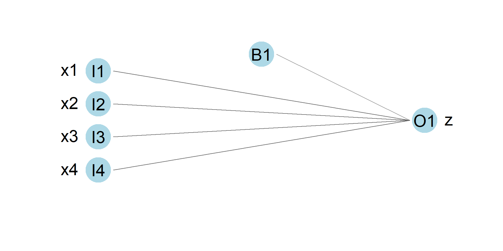
Step 2: Sigmoid transformation \[z\longrightarrow \sigma(z) = \frac{1}{1+e^{-z}}\]
The sigmoid maps \(z\) to a probability in \([0,1]\)
Limitation: Since the decision boundary is linear, logistic regression only works well when classes are approximately linearly separable. Non-linear patterns require more complex models.
Model Selection: Training and Testing
Similar to regression, we split our data to prevent overfitting:
Training set \(\{(\mathbf{x}_i,y_i):i\in\text{Train}\}\): Used to find optimal parameters \(\theta^*\) \[\theta^* = \arg\min_\theta \text{Loss}_{\text{train}}(\theta)\]
Test set \(\{(\mathbf{x}_i,y_i):i\in\text{Test}\}\): Used to evaluate generalization: \(\text{Loss}_{\text{test}}(\theta^*)\)
Overfitting detection: If \(\text{Loss}_{\text{train}} \ll \text{Loss}_{\text{test}}\), the model memorizes training data rather than learning patterns
Preventing overfitting: Add regularization penalties to the loss function
- Ridge (L2): \(\text{Loss}_{\text{regularized}}(\theta) = \text{Loss}(\theta) + \lambda\sum_{j=1}^n\omega_j^2\)
- Lasso (L1): \(\text{Loss}_{\text{regularized}}(\theta) = \text{Loss}(\theta) + \lambda\sum_{j=1}^n|\omega_j|\)
For classification we have more interpretable metrics than just loss and accuracy of predictions. These metrics help us understand how our model fails, not just that it fails.
Evaluation Metrics: Beyond Loss
For binary classification, the confusion matrix provides interpretable performance metrics:
| Predicted 0 | Predicted 1 | |
|---|---|---|
| Actual 0 | TN | FP |
| Actual 1 | FN | TP |
- True Positive (TP): Correctly predicted 1
- True Negative (TN): Correctly predicted 0
- False Positive (FP): Incorrectly predicted 1 (Type I error)
- False Negative (FN): Incorrectly predicted 0 (Type II error)
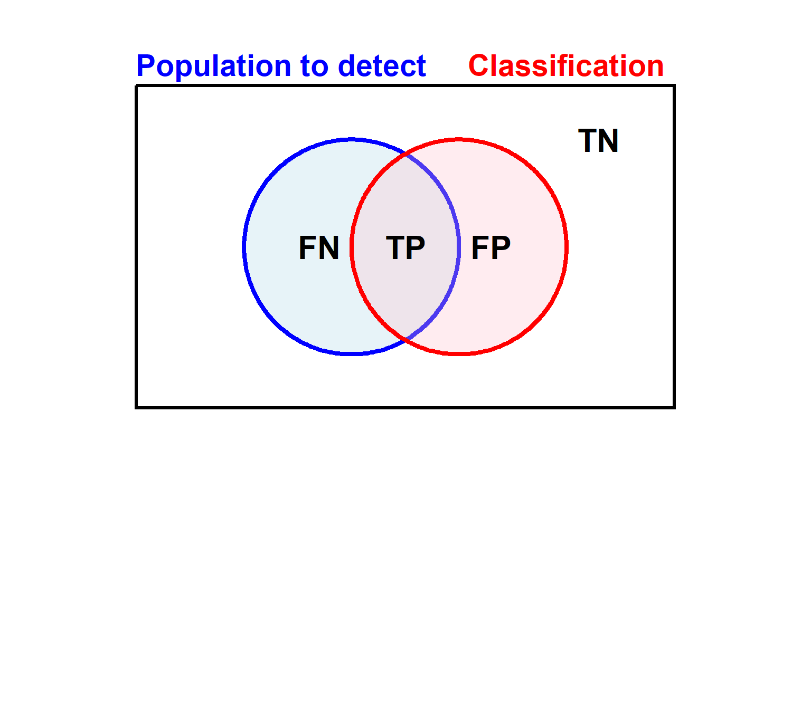
Evaluation Metrics: Beyond Loss
These metrics are central to ethical AI. Medical professionals have dealt with these tradeoffs for decades.
Medical Stat Terms
- Sensitivity \(=\frac{TP}{TP+FN}\) (probability test detects disease when present)
- Specificity \(=\frac{TN}{TN+FP}\) (probability test is negative when disease absent)
- Positive Predictive Value (PPV) \(=\frac{TP}{TP+FP}\) (probability of disease given positive test)
- Negative Predictive Value (NPV) \(=\frac{TN}{TN+FN}\) (probability no disease given negative test)
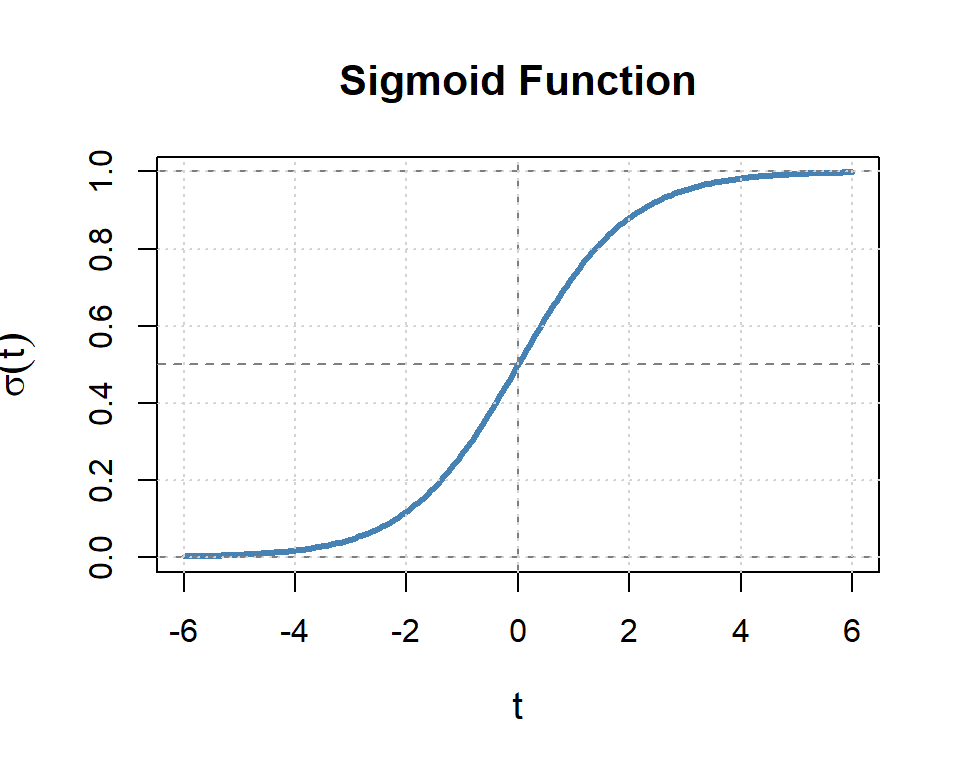
When the Condition is Rare
A “Good” Diagnostic Test:
- Sensitivity (Recall): 95% - catches 95% of true cases
- Specificity: 99% - correctly identifies 99% of negatives
Sounds impressive, right? Let’s see what happens in practice…
Testing 1,000 people (500 have condition)
| Actually Positive | Actually Negative | Total | |
|---|---|---|---|
| Test Positive | 475 | 5 | 480 |
| Test Negative | 25 | 495 | 520 |
- PPV (Precision): 475/480 = 99.0% ✓
- NPV: 495/520 = 95.2% ✓
- When prevalence is balanced, the test performs well!
Testing 1,000 people (100 have condition)
| Actually Positive | Actually Negative | Total | |
|---|---|---|---|
| Test Positive | 95 | 9 | 104 |
| Test Negative | 5 | 891 | 896 |
- PPV (Precision): 95/104 = 91.3% ✓
- NPV: 891/896 = 99.4% ✓
- Performance declining but acceptable
Testing 10,000 people (100 have condition)
| Actually Positive | Actually Negative | Total | |
|---|---|---|---|
| Test Positive | 95 | 99 | 194 |
| Test Negative | 5 | 9,801 | 9,806 |
- PPV (Precision): 95/194 = 48.96% ⚠️
- NPV: 9,801/9,806 = 99.94% ✓
- Less than half of positive predictions are correct!
Testing 100,000 people (100 have condition)
| Actually Positive | Actually Negative | Total | |
|---|---|---|---|
| Test Positive | 95 | 999 | 1,094 |
| Test Negative | 5 | 98,901 | 98,906 |
- PPV (Precision): 95/1,094 = 8.7% ⚠️
- NPV: 98,901/98,906 = 99.99% ✓
- Less than 1 in 10 positive predictions are correct!
Machine Learning Metrics
In ML, we often focus on Recall and Precision rather than Sensitivity and Specificity:
Recall = Sensitivity
\[\text{Recall} = \frac{\text{TP}}{\text{TP + FN}}\]
Of all actual positives, how many did we catch?
- Not affected by prevalence
Precision = PPV
\[\text{Precision} = \frac{\text{TP}}{\text{TP + FP}}\]
Of all predicted positives, how many are correct?
- Heavily affected by prevalence (base rates)
Why this matters for rare conditions
Remember our 0.1% prevalence example: Recall = 95%, but Precision = 8.7%
→ The model catches most cases, but most alerts are false alarms!
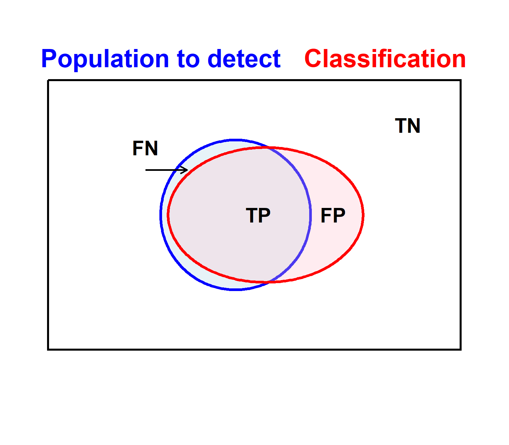
When is this appropriate?
- Early medical screening (e.g. cancer pre-screening)
- Fraud or anomaly detection used to trigger human review
- Search or recommendation systems where the user is free to ignore suggestions
When is this inappropriate?
- Automated punishment or denial (e.g. loan rejection, policing)
- Expensive or harmful interventions with no review step
- Situations where false accusations carry social or legal stigma
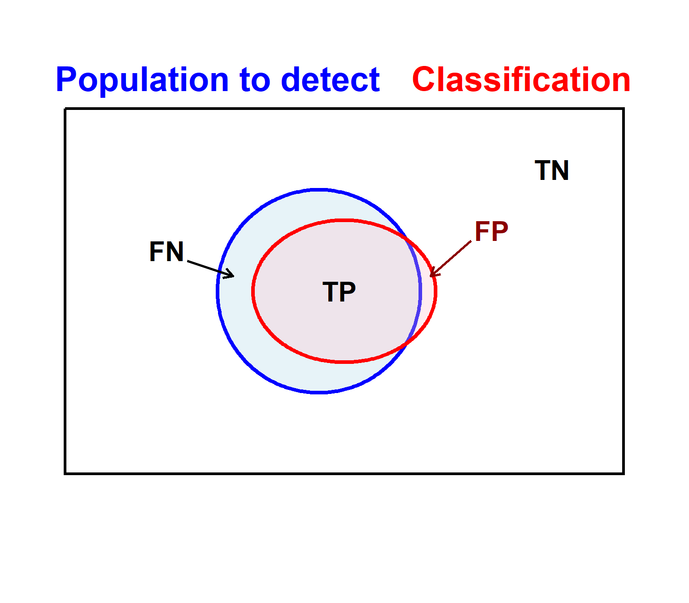
When is this appropriate?
- Automated actions with serious consequences (e.g. account suspension, benefit denial)
- Legal or disciplinary decisions where false accusations must be minimized
- Situations requiring very high confidence before acting
When is this inappropriate?
- Early screening or detection of rare but serious conditions
- Safety-critical monitoring where missed cases can cause harm
- Systems intended to provide help or protection rather than punishment
From Predictions to Decisions
A classifier produces a probability \(p\), not a yes/no answer.
We must choose a decision rule:
\[ \text{Predict positive if } p > t \]
- The common choice \(t = 0.5\) is conventional, not natural
- Different values of \(t\) lead to different outcomes
What changing \(t\) does
- Increasing \(t\): fewer positives
→ fewer false positives, more missed cases - Decreasing \(t\): more positives
→ more false positives, fewer missed cases
This is not a technical choice
Choosing \(t\) weights the cost of:
- false positives (unnecessary alarms, interventions)
- false negatives (missed cases, lack of help)
The “right” threshold depends on context, values, and consequences, not on the algorithm alone.
Application: Breast Cancer Classification
Dataset: Wisconsin Breast Cancer Database (from MASS package)
- Samples from breast masses
- Goal: Classify tumors as benign or malignant
Outcome variable:
- Class: benign or malignant
Sample size:
Predictor variables (all scaled 1-10):
V1: Clump thicknessV2: Uniformity of cell sizeV3: Uniformity of cell shapeV4: Marginal adhesionV5: Single epithelial cell sizeV6: Bare nucleiV7: Bland chromatinV8: Normal nucleoliV9: Mitoses
All features describe cellular characteristics visible under microscopy.
Question: Can we predict malignancy from these cellular features?
Building the Model: Simple Logistic Regression
Step 1: Train/Test Split (70/30)
# Clean data (remove NAs)
biopsy_clean <- na.omit(biopsy)
biopsy_clean$malignant <- ifelse(biopsy_clean$class == "malignant", 1, 0)
# Train/test split
set.seed(123)
train_idx <- sample(1:nrow(biopsy_clean),
0.7 * nrow(biopsy_clean))
train_bc <- biopsy_clean[train_idx, ]
test_bc <- biopsy_clean[-train_idx, ]
cat("Training samples:", nrow(train_bc), "\n")Training samples: 478 Test samples: 205 Model Summary:
Call:
glm(formula = malignant ~ V1 + V2 + V6, family = binomial, data = train_bc)
Coefficients:
Estimate Std. Error z value Pr(>|z|)
(Intercept) -7.7957 0.9218 -8.457 < 2e-16 ***
V1 0.4932 0.1506 3.275 0.00105 **
V2 0.8014 0.1703 4.705 2.54e-06 ***
V6 0.5965 0.1063 5.611 2.01e-08 ***
---
Signif. codes: 0 '***' 0.001 '**' 0.01 '*' 0.05 '.' 0.1 ' ' 1
(Dispersion parameter for binomial family taken to be 1)
Null deviance: 625.719 on 477 degrees of freedom
Residual deviance: 89.173 on 474 degrees of freedom
AIC: 97.173
Number of Fisher Scoring iterations: 7All three predictors are highly significant
Model Evaluation: Test Set Performance
Generate Predictions:
Confusion Matrix:
Predicted
Actual benign malignant
benign 136 3
malignant 5 61Performance Metrics:
Accuracy: 0.961 Precision: 0.953 Recall: 0.924 Distribution of Predicted Probabilities:
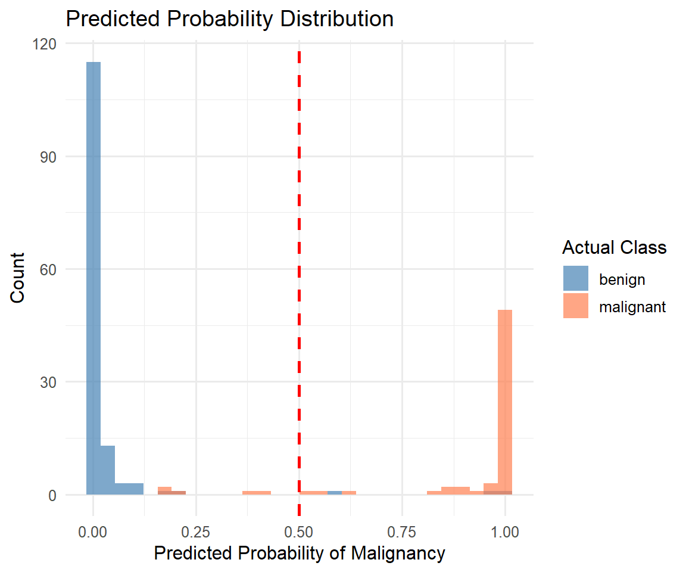
The red dashed line shows the 0.5 decision threshold.
Multiclass Classification
In multiclass classification, we observe data \(\{(\mathbf{x}_i,y_i):i\leq N\}\) where \(\mathbf{x}_i\in\mathbb{R}^n\) and \(y_i\in\{1,2,\dots,C\}\) is the label.
- We model the probability mass function over all \(C\) classes for each input \(\mathbf{x}\)
- The model is \(f_\theta:\mathbb{R}^n\to\mathbb{R}^C\) defined by: \[f_\theta(\mathbf{x})=(p_1(\mathbf{x}),p_2(\mathbf{x}),\dots,p_C(\mathbf{x}))\] where \(p_k(\mathbf{x}) = P(y=k|\mathbf{x})\) represents the probability that \(\mathbf{x}\) belongs to class \(k\)
- Required conditions: The probabilities must satisfy:
- \(p_k(\mathbf{x}) \geq 0\) for all \(k=1,\dots,C\) (non-negative)
- \(\sum_{k=1}^C p_k(\mathbf{x}) = 1\) (sum to one)
For each input \(\mathbf{x}\), our model predicts probabilities for all classes:

The likelihood is the probability of observing the actual outcome. For an observation with true class \(y\), the likelihood is simply: \[\text{likelihood} = p_y(\mathbf{x})\]
As in binary classification, we choose parameters \(\theta^*\) by Maximum Likelihood Estimation (MLE), selecting the model that assigns the highest probability to the observed data.
Multiclass Classification: MLE
Maximum Likelihood Estimation (MLE): Choose \(\theta^*\) that maximizes the probability of observing our data
Likelihood for all observations: \[\mathcal{L}(\theta) = \prod_{i=1}^N p_{y_i}(\mathbf{x}_i)\] where \(p_{y_i}(\mathbf{x}_i)\) is the model’s predicted probability for the true class \(y_i\)
Log-likelihood (easier to optimize): \[\log \mathcal{L}(\theta) = \sum_{i=1}^N \log(p_{y_i}(\mathbf{x}_i))\]
Cross-Entropy Loss (negate and average): \[\text{Loss}(\theta) = -\frac{1}{N}\sum_{i=1}^N\log(p_{y_i}(\mathbf{x}_i))\]
Minimizing this loss ≡ Maximizing the likelihood
Note: This generalizes binary cross-entropy—when \(C=2\), we recover the binary classification loss.
Understanding Cross-Entropy Loss
Cross-entropy measures how well a predicted probability distribution \(Q\) approximates a true distribution \(P\): \[H(P, Q) = -\sum_{k=1}^C P(k) \log Q(k)\] Lower cross-entropy = better approximation
In our classification setting:
True distribution \(P\) (one-hot): \[P(k) = \begin{cases} 1 &\text{if } k=y\\0 &\text{otherwise}\end{cases}\]
For example, if true class is \(y=2\):
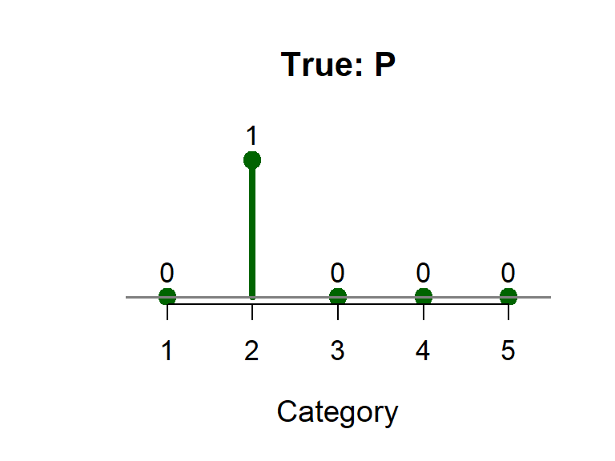
Predicted distribution \(Q\): \[Q(k) = p_k(\mathbf{x})\]
Model’s prediction:
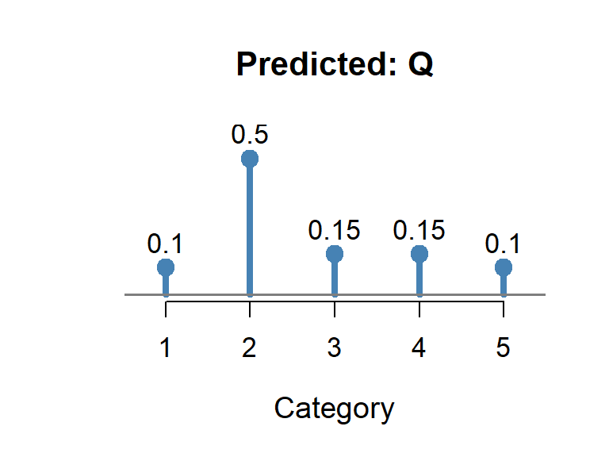
Simplification: Since \(P(k)=1\) only for \(k=y\) and \(P(k)=0\) elsewhere: \[H(P, Q) = -\sum_{k=1}^C P(k) \log Q(k) = -\log Q(y) = -\log p_y(\mathbf{x})\] This is exactly our loss function (averaged over all samples)!
Connection to KL Divergence: Cross-entropy is related to the Kullback–Leibler divergence, \[ H(P,Q) = \mathrm{KL}(P\|Q) + H(P). \] Since \(H(P)\) is constant (and zero for one-hot labels), minimizing cross-entropy is equivalent to minimizing KL divergence, a fundamental measure of distributional difference used throughout statistics, information theory, and machine learning, including variational inference, VAEs, and diffusion models.
Multiclass Logistic Regression
In Multiclass Logistic Regression (also called Softmax Regression), we model the probability distribution using: \[f_\theta(\mathbf{x})=\text{softmax}(\mathbf{z}(\mathbf{x}))\]
where \(\mathbf{z}(\mathbf{x}) = W\mathbf{x}+\mathbf{b}\) computes the linear scores for each class: \[\mathbf{z}(\mathbf{x}) = (z_1(\mathbf{x}), z_2(\mathbf{x}), \dots, z_C(\mathbf{x}))\]
Here, \(W\) is a \(C \times n\) weight matrix and \(\mathbf{b}\in\mathbb{R}^C\) is the bias vector.
The softmax function \(\text{softmax}:\mathbb{R}^C\to[0,1]^C\) is defined by: \[\text{softmax}(\mathbf{z})_k = \frac{e^{z_k}}{\sum_{j=1}^C e^{z_j}}\]
Softmax converts any vector of real numbers into a valid probability distribution (non-negative, sums to 1).
Key property: Larger scores → higher probabilities
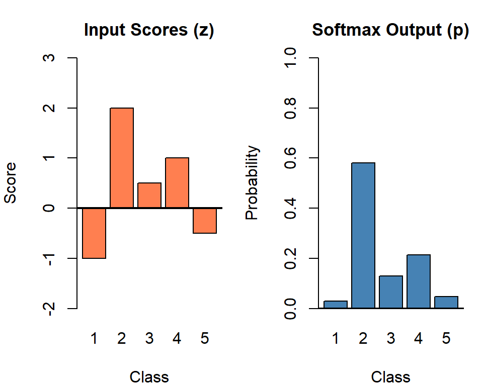
Multiclass Logistic Regression combines an affine map \(\mathbf{z}:\mathbb{R}^n\to \mathbb{R}^C\) with the softmax activation:
Step 1: Linear scores for each class \[\mathbf{z}(\mathbf{x}) = W\mathbf{x}+\mathbf{b}\] where \(W\) is a \(C \times n\) weight matrix and \(\mathbf{b}\in\mathbb{R}^C\) is the bias vector.
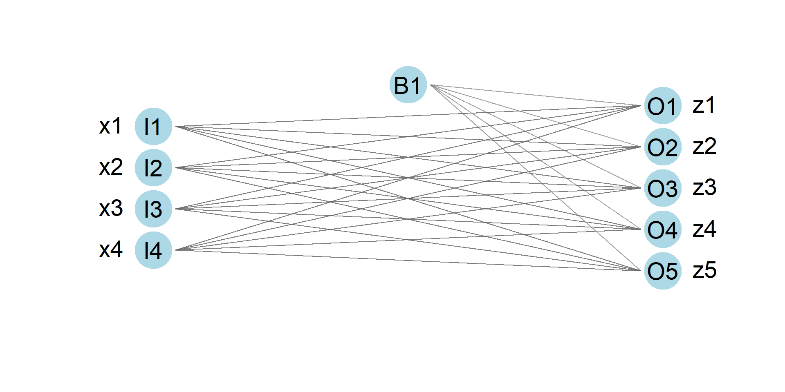
Each output node computes a score \(z_k\in\mathbb{R}\)
Step 2: Softmax transformation
\[\begin{array}{c} \mathbf{z}=(z_1,\dots,z_C)\\ \downarrow\\ \text{softmax}(\mathbf{z})=(p_1,\dots,p_C) \end{array}\]
where \(p_k = \frac{e^{z_k}}{\sum_{j=1}^C e^{z_j}}\)
The softmax ensures:
- All probabilities are non-negative
- Probabilities sum to 1: \(\sum_{k=1}^C p_k = 1\)
Prediction: Choose class with highest probability \[\hat{y} = \arg\max_{k} p_k(\mathbf{x})\]
Limitation: Decision boundaries between classes are still linear (piecewise linear overall). Non-linear patterns require neural networks with hidden layers.
Application: The Iris Dataset
One of the most famous dataset in statistics and machine learning
Historical Context:
- Published by Ronald Fisher in 1936
- Used to demonstrate linear discriminant analysis
- Collected by botanist Edgar Anderson in the Gaspé Peninsula, Quebec
- Still widely used 90 years later for teaching classification!
The Classification Task: Predict iris species from flower measurements

Model Training and Predictions
Step 1: Prepare Data
# Convert species to numeric labels
iris$label <- as.numeric(iris$Species)
# Train/test split (70/30)
set.seed(42)
train_idx <- sample(1:nrow(iris), 0.7 * nrow(iris))
train_iris <- iris[train_idx, ]
test_iris <- iris[-train_idx, ]
cat("Training samples:", nrow(train_iris), "\n")Training samples: 105 Test samples: 45 Step 2: Fit Softmax Regression
library(nnet)
model_iris <- multinom(Species ~ Sepal.Length + Sepal.Width +
Petal.Length + Petal.Width,
data = train_iris)# weights: 18 (10 variable)
initial value 115.354290
iter 10 value 16.619564
iter 20 value 2.934473
iter 30 value 2.237217
iter 40 value 2.217019
iter 50 value 2.168951
iter 60 value 2.163153
iter 70 value 2.125847
iter 80 value 2.116500
iter 90 value 2.105493
iter 100 value 2.100126
final value 2.100126
stopped after 100 iterationsPredict Probabilities
| Actual | Predicted | Prob_setosa | Prob_versicolor | Prob_virginica |
|---|---|---|---|---|
| setosa | setosa | 1 | 0.000 | 0.000 |
| setosa | setosa | 1 | 0.000 | 0.000 |
| setosa | setosa | 1 | 0.000 | 0.000 |
| virginica | virginica | 0 | 0.000 | 1.000 |
| virginica | virginica | 0 | 0.016 | 0.984 |
| setosa | setosa | 1 | 0.000 | 0.000 |
| versicolor | versicolor | 0 | 1.000 | 0.000 |
| setosa | setosa | 1 | 0.000 | 0.000 |
| versicolor | versicolor | 0 | 1.000 | 0.000 |
| virginica | virginica | 0 | 0.000 | 1.000 |